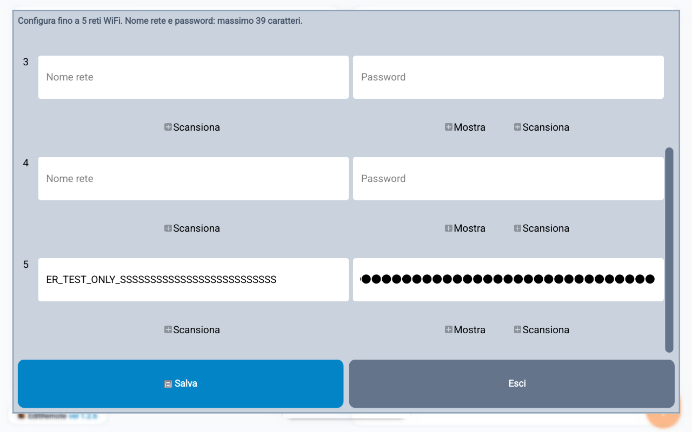
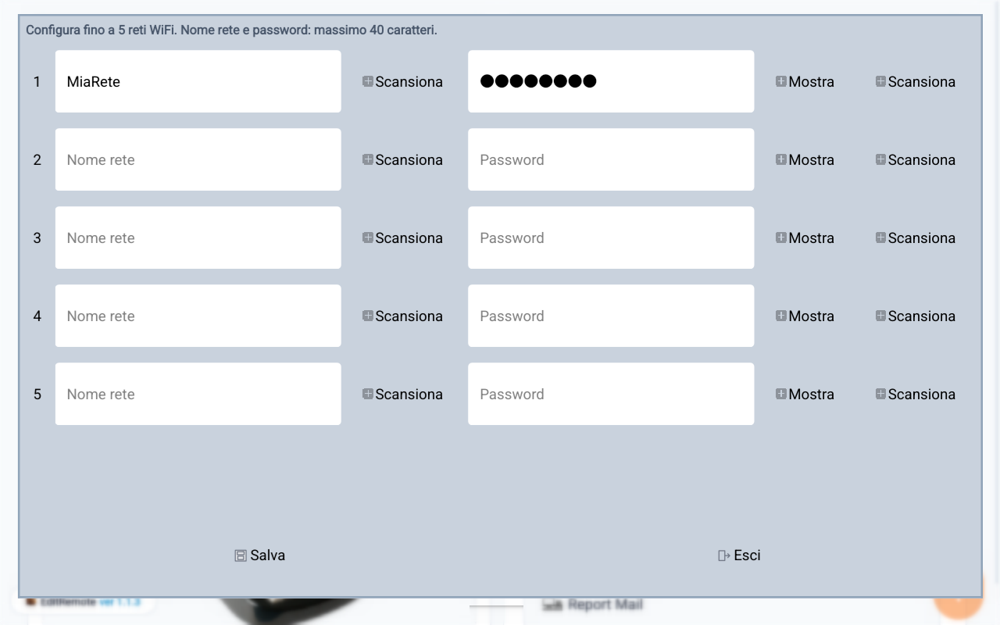

Programmazione WiFi
Tabella reti WiFi
EditRemote consente di programmare fino a cinque coppie Nome rete e Password nella tabella interna della cassa / RT.
Disponibilità
La funzione è disponibile per:
- Evo, Evo+ e Jolly a partire dalla revisione 2.7.
- Gamma Plus a partire dalla revisione 23.
Compilazione
- Aprire Wifi nella sezione Configurazioni.
- Inserire il nome della rete e la password in una delle cinque righe disponibili.
- Usare Scansiona accanto al nome rete per scegliere una rete WiFi visibile.
- Usare Scansiona accanto alla password per acquisire la password da un QR code.
- Premere Salva per programmare la tabella interna della cassa / RT.
- Dopo il salvataggio il dialogo si chiude. Riaprire Wifi per ottenere una nuova lettura dalla cassa e controllare tutte e cinque le righe.
Esempio verificato via BLE: quinta rete e limite dei campi
Nel collaudo su SMARTY EVO REV. 2.7 sono stati letti tutti i cinque record WF prima della scrittura. Nella quinta riga vuota sono stati inseriti SSID e password di prova di 40 caratteri: l'editor li ha limitati a 39, come previsto, e la nuova lettura dalla cassa ha confermato entrambi i valori di 39 caratteri.
Provati anche Mostra/Nascondi della password e lo scorrimento fino alla quinta riga. Al termine la riga e' stata svuotata e tutti e cinque i record sono risultati identici alla baseline. Non sono stati collaudati in questa prova scansione delle reti, acquisizione QR o collegamento a un access point.


Cambio della rete utilizzata
La programmazione aggiorna la tabella interna della cassa / RT, ma non cambia automaticamente la rete attiva.
Per cambiare effettivamente rete, eseguire sulla cassa i seguenti passaggi:
Impostare CAMBIO PSW su No perché la password è stata appena programmata tramite EditRemote.